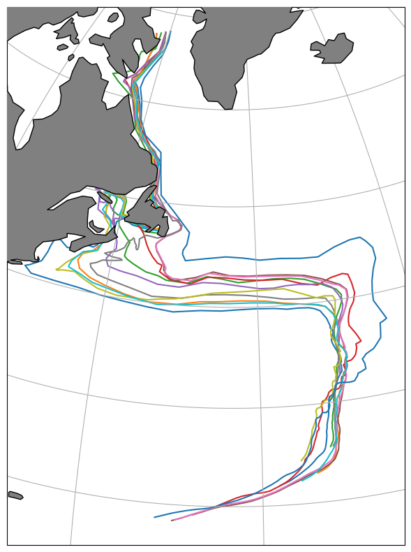
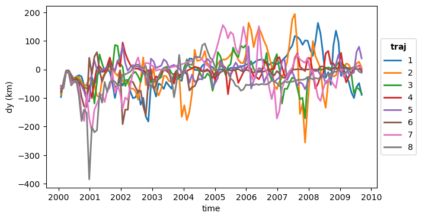
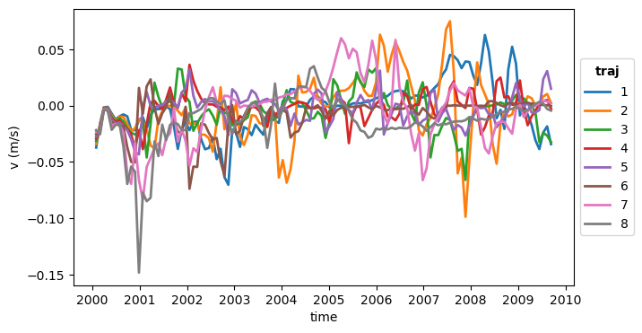
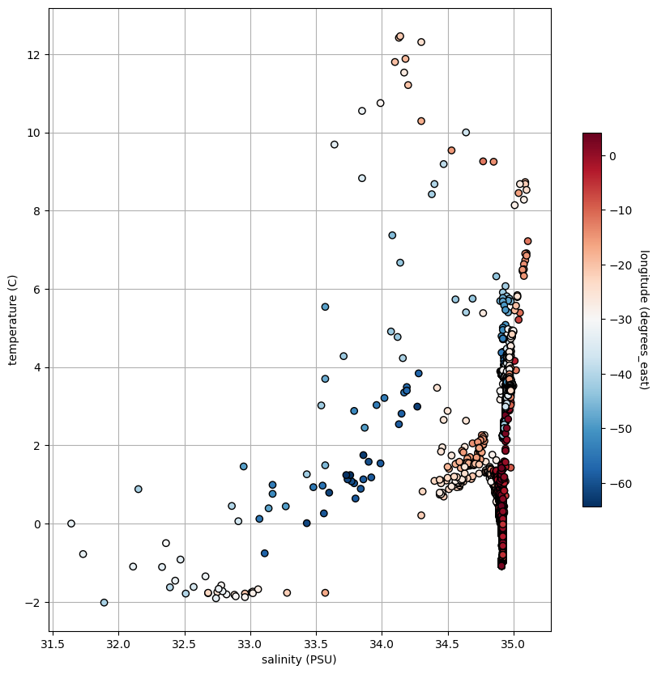
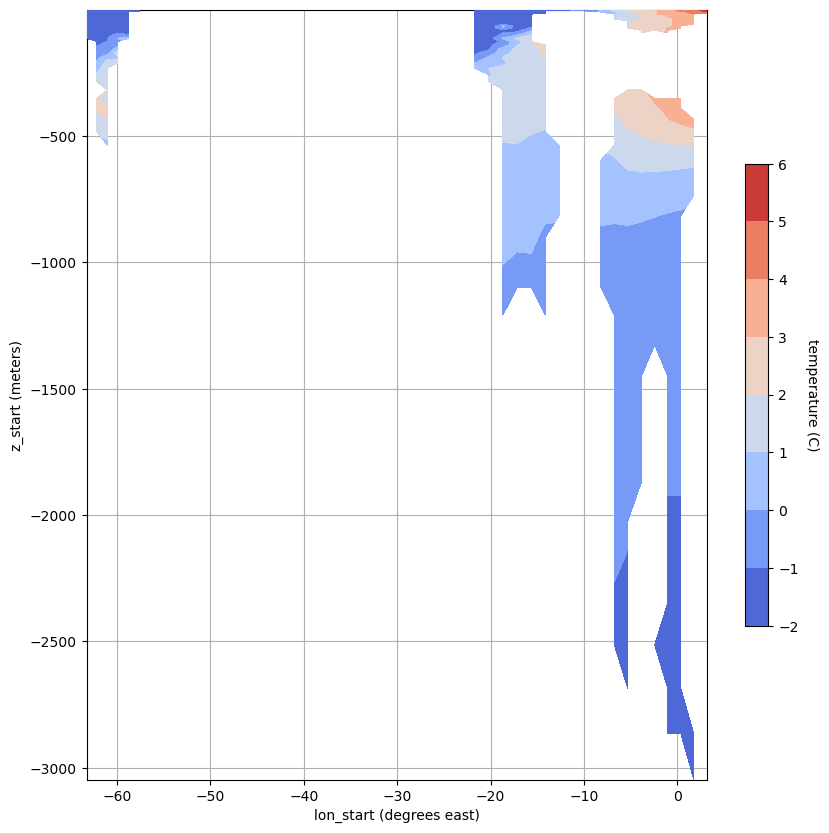
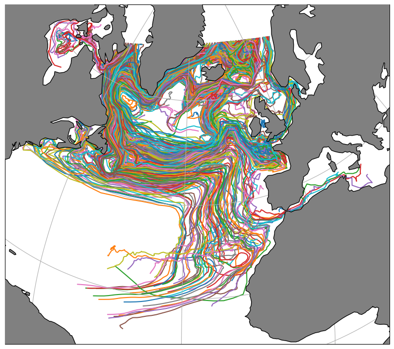
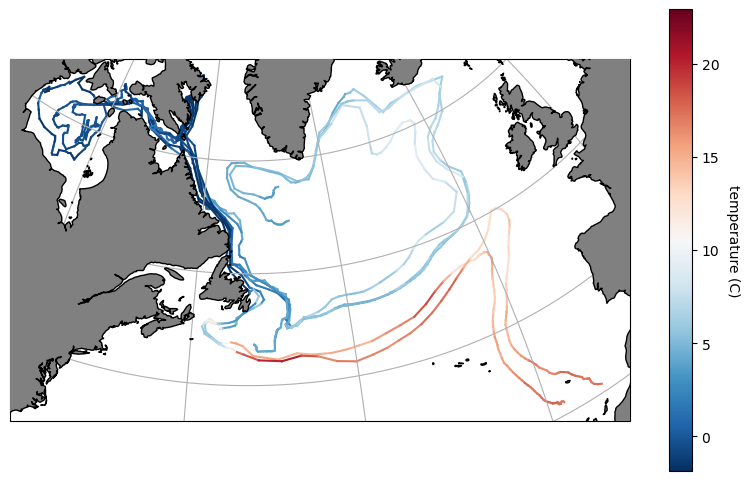
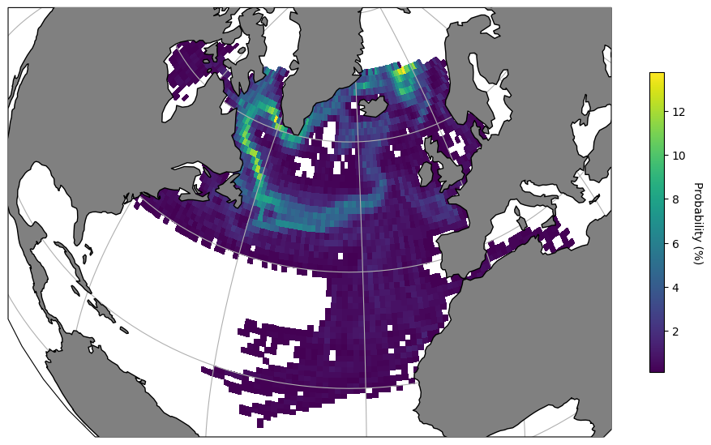
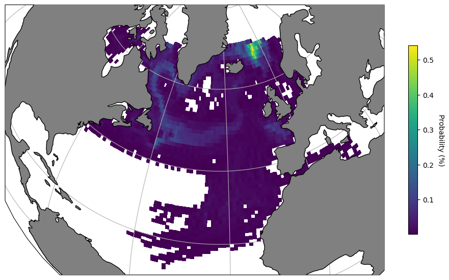
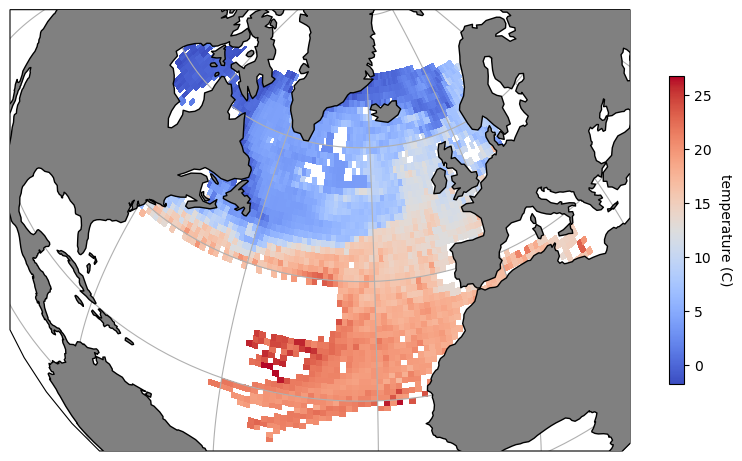

LT Toolbox Tutorial: 1. Getting Started with Trajectory Arrays#
Welcome to the Lagrangian Trajectories Toolbox tutorial!
The LT Toolbox is a Python library dedicated to the post-processing, visualisation and analysis of Lagrangian water parcel trajectories. The toolbox offers users two structures for working with Lagrangian trajectories: Trajectory Arrays (TrajArrays) and Trajectory Frames (TrajFrames). In this tutorial, we explore TrajArrays, which make use of xarray multidimensional DataArrays to store attribute variables associated with trajectories (e.g. lat, lon, in-situ temperature etc.).
In this tutorial, we will learn how to:
Store the output of an example simulation of the TRACMASS Lagrangian trajectory code in a TrajArray object.
Add new variables, such as particle IDs and seeding levels, to your dataset.
Filter trajectories using any attribute variable contained in your dataset.
Get existing features, including trajectory start/end times, start/end locations and durations.
Compute metrics, such as distance travelled, particle displacements, velocities and Lagrangian probabilities from trajectories.
Plot trajectory data in the form of time series, temperature-salinity diagrams and more.
Map trajectories, properties and probability distributions onto the Earth’s surface using Cartopy.
Getting Started#
Let us begin by importing the relevant packages we’ll need to get started with the LT Toolbox.
Note: Since lt_toolbox is still undergoing unit testing, the package is not yet available on PyPi, hence we use a local development version.
[1]:
import sys
import xarray as xr
import numpy as np
import matplotlib.pyplot as plt
# After pip installing the lt_toolbox package:
import lt_toolbox as ltt
Storing Trajectory Data#
To explore the functionality of the LT Toolbox, we will use output from the example NEMO ORCA1 (3D) simulation contained in the TRACMASS documentation.
The simulation uses monthly mean velocity fields (24 months continuously looped over to generate a 200 year simulation) and releases particles southward from ~68 N for the first 24 months (seeding levels). Particles are terminated on reaching the equator or on re-encountering the seeding plane (~ 68 N). The maximum lifetime for trajectories in the simulation is 200 years.
TRACMASS outputs trajectories in .csv files, so we first used the export_tracmass_to_nc.py file to reformat the output data into a .nc file conforming to the standard NCEI trajectory template.
Below we load the resulting .nc file as a DataSet with xarray, before creating a TrajArray, traj.
[2]:
# Define filepath to example ORCA1 output data:
traj_filepath = "./data/ORCA1-N406_TRACMASS_example.nc"
# Open output .nc file as a DataSet:
dataset = xr.open_dataset(traj_filepath)
# Create a TrajArray from the DataSet:
traj = ltt.TrajArray(ds=dataset)
print(traj)
/home/snapdragon/HadGEM3-GC31-MM/Proj_Future_Pathways/src/Software/lt_toolbox/lt_toolbox/trajarray/trajarray.py:130: FutureWarning: The return type of `Dataset.dims` will be changed to return a set of dimension names in future, in order to be more consistent with `DataArray.dims`. To access a mapping from dimension names to lengths, please use `Dataset.sizes`.
self.n_traj = ds.dims['traj']
/home/snapdragon/HadGEM3-GC31-MM/Proj_Future_Pathways/src/Software/lt_toolbox/lt_toolbox/trajarray/trajarray.py:131: FutureWarning: The return type of `Dataset.dims` will be changed to return a set of dimension names in future, in order to be more consistent with `DataArray.dims`. To access a mapping from dimension names to lengths, please use `Dataset.sizes`.
self.n_obs = ds.dims['obs']
<TrajArray object>
------------------------------------------
Dimensions: ['traj', 'obs']
Trajectories: 800
Observations: 120
------------------------------------------
Data variables:
trajectory (traj, obs) float64 768kB ...
time (traj, obs) timedelta64[ns] 768kB ...
lat (traj, obs) float64 768kB ...
lon (traj, obs) float64 768kB ...
z (traj, obs) float64 768kB ...
vol (traj, obs) float64 768kB ...
temp (traj, obs) float64 768kB ...
sal (traj, obs) float64 768kB ...
sigma0 (traj, obs) float64 768kB ...
What is a TrajArray?
The TrajArray, traj, hosts the original xarray DataSet accessible as an attribute with traj.data.
For improved functionality, attribute variables (data variables stored in our DataSet) are made accessible with traj.{variable} to access a given {variable}.
The true value of a trajectories object comes with the use of the built-in functions specifically designed for post-processing, visualisation and analysis of Lagrangain water parcel trajectories.
Exploring our TrajArray#
By accessing the .data attribute of our TrajArray above, we can see that attribute variables are formatted with dimensions traj (trajectory) and obs (observation - represents one time-level).
Note: Since trajectories are of differing lengths, missing obs values for a given traj are filled as NaNs or NaTs (time).
[3]:
# To return details of our original DataSet.
print(traj)
# To access the temp attribute variable.
print(traj.temp)
# Using datetime64 format for time instead of timedelta64.
# Start date of simulation is 2000-01-01
traj = traj.use_datetime('2000-01-01', unit='s')
<TrajArray object>
------------------------------------------
Dimensions: ['traj', 'obs']
Trajectories: 800
Observations: 120
------------------------------------------
Data variables:
trajectory (traj, obs) float64 768kB ...
time (traj, obs) timedelta64[ns] 768kB ...
lat (traj, obs) float64 768kB ...
lon (traj, obs) float64 768kB ...
z (traj, obs) float64 768kB ...
vol (traj, obs) float64 768kB ...
temp (traj, obs) float64 768kB ...
sal (traj, obs) float64 768kB ...
sigma0 (traj, obs) float64 768kB ...
<xarray.DataArray 'temp' (traj: 800, obs: 120)> Size: 768kB
[96000 values with dtype=float64]
Dimensions without coordinates: traj, obs
Attributes:
long_name: temperature
standard_name: temperature
units: C
/home/snapdragon/HadGEM3-GC31-MM/Proj_Future_Pathways/src/Software/lt_toolbox/lt_toolbox/trajarray/trajarray.py:200: UserWarning: Converting non-nanosecond precision timedelta values to nanosecond precision. This behavior can eventually be relaxed in xarray, as it is an artifact from pandas which is now beginning to support non-nanosecond precision values. This warning is caused by passing non-nanosecond np.datetime64 or np.timedelta64 values to the DataArray or Variable constructor; it can be silenced by converting the values to nanosecond precision ahead of time.
self.data.time.values = start_date + self.data.time.astype(type_str)
/home/snapdragon/HadGEM3-GC31-MM/Proj_Future_Pathways/src/Software/lt_toolbox/lt_toolbox/trajarray/trajarray.py:130: FutureWarning: The return type of `Dataset.dims` will be changed to return a set of dimension names in future, in order to be more consistent with `DataArray.dims`. To access a mapping from dimension names to lengths, please use `Dataset.sizes`.
self.n_traj = ds.dims['traj']
/home/snapdragon/HadGEM3-GC31-MM/Proj_Future_Pathways/src/Software/lt_toolbox/lt_toolbox/trajarray/trajarray.py:131: FutureWarning: The return type of `Dataset.dims` will be changed to return a set of dimension names in future, in order to be more consistent with `DataArray.dims`. To access a mapping from dimension names to lengths, please use `Dataset.sizes`.
self.n_obs = ds.dims['obs']
Adding new attribute variables to our TrajArray.#
To add a new attribute variable to a TrajArray, including appending it to the original DataSet, use the .add_variable() method.
Two common attribute variables which a user may wish to add to their TrajArray, a unique trajectory id and the seeding level when a particles are released are included as seperate methods: .add_id() and .add_seed().
[4]:
# Suppose we would like to add the id and seeding level of all of our
# particles for future analysis.
# We can combine methods on a single line to return both.
traj = traj.add_id().add_seed()
# Let's look at our new attribute variables.
print(traj.id)
print(traj.seed_level)
<xarray.DataArray 'id' (traj: 800)> Size: 6kB
array([ 1, 2, 3, 4, 5, 6, 7, 8, 9, 10, 11, 12, 13,
14, 15, 16, 17, 18, 19, 20, 21, 22, 23, 24, 25, 26,
27, 28, 29, 30, 31, 32, 33, 34, 35, 36, 37, 38, 39,
40, 41, 42, 43, 44, 45, 46, 47, 48, 49, 50, 51, 52,
53, 54, 55, 56, 57, 58, 59, 60, 61, 62, 63, 64, 65,
66, 67, 68, 69, 70, 71, 72, 73, 74, 75, 76, 77, 78,
79, 80, 81, 82, 83, 84, 85, 86, 87, 88, 89, 90, 91,
92, 93, 94, 95, 96, 97, 98, 99, 100, 101, 102, 103, 104,
105, 106, 107, 108, 109, 110, 111, 112, 113, 114, 115, 116, 117,
118, 119, 120, 121, 122, 123, 124, 125, 126, 127, 128, 129, 130,
131, 132, 133, 134, 135, 136, 137, 138, 139, 140, 141, 142, 143,
144, 145, 146, 147, 148, 149, 150, 151, 152, 153, 154, 155, 156,
157, 158, 159, 160, 161, 162, 163, 164, 165, 166, 167, 168, 169,
170, 171, 172, 173, 174, 175, 176, 177, 178, 179, 180, 181, 182,
183, 184, 185, 186, 187, 188, 189, 190, 191, 192, 193, 194, 195,
196, 197, 198, 199, 200, 201, 202, 203, 204, 205, 206, 207, 208,
209, 210, 211, 212, 213, 214, 215, 216, 217, 218, 219, 220, 221,
222, 223, 224, 225, 226, 227, 228, 229, 230, 231, 232, 233, 234,
235, 236, 237, 238, 239, 240, 241, 242, 243, 244, 245, 246, 247,
248, 249, 250, 251, 252, 253, 254, 255, 256, 257, 258, 259, 260,
...
547, 548, 549, 550, 551, 552, 553, 554, 555, 556, 557, 558, 559,
560, 561, 562, 563, 564, 565, 566, 567, 568, 569, 570, 571, 572,
573, 574, 575, 576, 577, 578, 579, 580, 581, 582, 583, 584, 585,
586, 587, 588, 589, 590, 591, 592, 593, 594, 595, 596, 597, 598,
599, 600, 601, 602, 603, 604, 605, 606, 607, 608, 609, 610, 611,
612, 613, 614, 615, 616, 617, 618, 619, 620, 621, 622, 623, 624,
625, 626, 627, 628, 629, 630, 631, 632, 633, 634, 635, 636, 637,
638, 639, 640, 641, 642, 643, 644, 645, 646, 647, 648, 649, 650,
651, 652, 653, 654, 655, 656, 657, 658, 659, 660, 661, 662, 663,
664, 665, 666, 667, 668, 669, 670, 671, 672, 673, 674, 675, 676,
677, 678, 679, 680, 681, 682, 683, 684, 685, 686, 687, 688, 689,
690, 691, 692, 693, 694, 695, 696, 697, 698, 699, 700, 701, 702,
703, 704, 705, 706, 707, 708, 709, 710, 711, 712, 713, 714, 715,
716, 717, 718, 719, 720, 721, 722, 723, 724, 725, 726, 727, 728,
729, 730, 731, 732, 733, 734, 735, 736, 737, 738, 739, 740, 741,
742, 743, 744, 745, 746, 747, 748, 749, 750, 751, 752, 753, 754,
755, 756, 757, 758, 759, 760, 761, 762, 763, 764, 765, 766, 767,
768, 769, 770, 771, 772, 773, 774, 775, 776, 777, 778, 779, 780,
781, 782, 783, 784, 785, 786, 787, 788, 789, 790, 791, 792, 793,
794, 795, 796, 797, 798, 799, 800])
Dimensions without coordinates: traj
Attributes:
long_name: trajectory id
standard_name: id
units: none
<xarray.DataArray 'seed_level' (traj: 800)> Size: 6kB
array([1, 1, 1, 1, 1, 1, 1, 1, 1, 1, 1, 1, 1, 1, 1, 1, 1, 1, 1, 1, 1, 1,
1, 1, 1, 1, 1, 1, 1, 1, 1, 1, 1, 1, 1, 1, 1, 1, 1, 1, 1, 1, 1, 1,
1, 1, 1, 1, 1, 1, 1, 1, 1, 1, 1, 1, 1, 1, 1, 1, 1, 1, 1, 1, 1, 1,
1, 1, 1, 1, 1, 1, 1, 1, 1, 1, 1, 1, 1, 1, 1, 1, 1, 1, 1, 1, 1, 1,
1, 1, 1, 1, 1, 1, 1, 1, 1, 1, 1, 1, 1, 1, 1, 1, 1, 1, 1, 1, 1, 1,
1, 1, 1, 1, 1, 1, 1, 1, 1, 1, 1, 1, 1, 1, 1, 1, 1, 1, 1, 1, 1, 1,
1, 1, 1, 1, 1, 1, 1, 1, 1, 1, 1, 1, 1, 1, 1, 1, 1, 1, 1, 1, 1, 1,
1, 1, 1, 1, 1, 1, 1, 1, 1, 1, 1, 1, 1, 1, 1, 1, 1, 1, 1, 1, 1, 1,
1, 1, 1, 1, 1, 1, 1, 1, 1, 1, 1, 1, 1, 1, 1, 1, 1, 1, 1, 1, 1, 1,
1, 1, 1, 1, 1, 1, 1, 1, 1, 1, 1, 1, 1, 1, 1, 1, 1, 1, 1, 1, 1, 1,
1, 1, 1, 1, 1, 1, 1, 1, 1, 1, 1, 1, 1, 1, 1, 1, 1, 1, 1, 1, 1, 1,
1, 1, 1, 1, 1, 1, 1, 1, 1, 1, 1, 1, 1, 1, 1, 1, 1, 1, 1, 1, 1, 1,
1, 1, 1, 1, 1, 1, 1, 1, 1, 1, 1, 1, 1, 1, 1, 1, 1, 1, 1, 1, 1, 1,
1, 1, 1, 1, 1, 1, 1, 1, 1, 1, 1, 1, 1, 1, 1, 1, 1, 1, 1, 1, 1, 1,
1, 1, 1, 1, 1, 1, 1, 1, 1, 1, 1, 1, 1, 1, 1, 1, 1, 1, 1, 1, 1, 1,
1, 1, 1, 1, 1, 1, 1, 1, 1, 1, 1, 1, 1, 1, 1, 1, 1, 1, 1, 1, 1, 1,
1, 1, 1, 1, 1, 1, 1, 1, 1, 1, 1, 1, 1, 1, 1, 1, 1, 1, 1, 1, 1, 1,
1, 1, 1, 1, 1, 1, 1, 1, 1, 1, 1, 1, 1, 1, 1, 1, 1, 1, 1, 1, 1, 1,
1, 1, 1, 1, 1, 1, 1, 1, 1, 1, 1, 1, 1, 1, 1, 1, 1, 1, 1, 1, 1, 1,
1, 1, 1, 1, 1, 1, 1, 1, 1, 1, 1, 1, 1, 1, 1, 1, 1, 1, 1, 1, 1, 1,
1, 1, 1, 1, 1, 1, 1, 1, 1, 1, 1, 1, 1, 1, 1, 1, 1, 1, 1, 1, 1, 1,
1, 1, 1, 1, 1, 1, 1, 1, 1, 1, 1, 1, 1, 1, 1, 1, 1, 1, 1, 1, 1, 1,
1, 1, 1, 1, 1, 1, 1, 1, 1, 1, 1, 1, 1, 1, 1, 1, 1, 1, 1, 1, 1, 1,
1, 1, 1, 1, 1, 1, 1, 1, 1, 1, 1, 1, 1, 1, 1, 1, 1, 1, 1, 1, 1, 1,
1, 1, 1, 1, 1, 1, 1, 1, 1, 1, 1, 1, 1, 1, 1, 1, 1, 1, 1, 1, 1, 1,
1, 1, 1, 1, 1, 1, 1, 1, 1, 1, 1, 1, 1, 1, 1, 1, 1, 1, 1, 1, 1, 1,
1, 1, 1, 1, 1, 1, 1, 1, 1, 1, 1, 1, 1, 1, 1, 1, 1, 1, 1, 1, 1, 1,
1, 1, 1, 1, 1, 1, 1, 1, 1, 1, 1, 1, 1, 1, 1, 1, 1, 1, 1, 1, 1, 1,
1, 1, 1, 1, 1, 1, 1, 1, 1, 1, 1, 1, 1, 1, 1, 1, 1, 1, 1, 1, 1, 1,
1, 1, 1, 1, 1, 1, 1, 1, 1, 1, 1, 1, 1, 1, 1, 1, 1, 1, 1, 1, 1, 1,
1, 1, 1, 1, 1, 1, 1, 1, 1, 1, 1, 1, 1, 1, 1, 1, 1, 1, 1, 1, 1, 1,
1, 1, 1, 1, 1, 1, 1, 1, 1, 1, 1, 1, 1, 1, 1, 1, 1, 1, 1, 1, 1, 1,
1, 1, 1, 1, 1, 1, 1, 1, 1, 1, 1, 1, 1, 1, 1, 1, 1, 1, 1, 1, 1, 1,
1, 1, 1, 1, 1, 1, 1, 1, 1, 1, 1, 1, 1, 1, 1, 1, 1, 1, 1, 1, 1, 1,
1, 1, 1, 1, 1, 1, 1, 1, 1, 1, 1, 1, 1, 1, 1, 1, 1, 1, 1, 1, 1, 1,
1, 1, 1, 1, 1, 1, 1, 1, 1, 1, 1, 1, 1, 1, 1, 1, 1, 1, 1, 1, 1, 1,
1, 1, 1, 1, 1, 1, 1, 1])
Dimensions without coordinates: traj
Attributes:
long_name: seeding level
standard_name: seed_level
units: none
[5]:
# Consider now if we wanted to create a new attribute variable, temp_K,
# to store the in-situ temperature in Kelvin.
# Using .values to access the numpy array storing the values of temp.
temp_k = traj.temp.values + 273.15
# Dictionary of attributes of our new variable.
attrs = {'long_name': 'in-situ temperature in Kelvin',
'standard_name': 'temp_K',
'units': 'Kelvin'
}
# Add temp_k as a new attribute variable to our trajectories object.
traj = traj.add_variable(temp_k, attrs)
# Let's see if temp_K has been added!
print(traj.temp_K)
<xarray.DataArray 'temp_K' (traj: 800, obs: 120)> Size: 768kB
array([[271.43, 271.43, 271.4 , ..., 277.95, 277.64, nan],
[271.43, 271.43, 271.42, ..., 277.08, 277.18, nan],
[271.43, 271.42, 271.42, ..., 276.12, 277.21, nan],
...,
[277.95, 278.14, 277.85, ..., nan, nan, nan],
[277.95, 278.14, 277.85, ..., nan, nan, nan],
[277.95, 278.12, 277.88, ..., nan, nan, nan]])
Dimensions without coordinates: traj, obs
Attributes:
long_name: in-situ temperature in Kelvin
standard_name: temp_K
units: Kelvin
Filtering trajectories using an attribute variable.#
Filtering our trajectories to include only those complete trajectories where a specific criteria is met is integral to Lagrangian analysis.
The LT Toolbox includes three fully vectorised methods .filter() .filter_between() and filter_isin() to allow users to filter on any attribute variable conatined in their TrajArray.
[6]:
# Filtering all our trajectories to include only those released in
# seeding level 1 and storing as a new trajectories object, traj_seed1.
traj_seed1 = traj.filter(query='seed_level == 1', drop=False)
# Let's look at traj_seed1 - only 864 particles were
# released in seeding level 1.
print(traj_seed1)
<TrajArray object>
------------------------------------------
Dimensions: ['traj', 'obs']
Trajectories: 800
Observations: 120
------------------------------------------
Data variables:
trajectory (traj, obs) float64 768kB 1.0 1.0 1.0 1.0 ... nan nan nan nan
time (traj, obs) datetime64[ns] 768kB 2000-01-01 2000-01-31 ... NaT
lat (traj, obs) float64 768kB ...
lon (traj, obs) float64 768kB ...
z (traj, obs) float64 768kB ...
vol (traj, obs) float64 768kB ...
temp (traj, obs) float64 768kB -1.72 -1.72 -1.75 ... nan nan nan
sal (traj, obs) float64 768kB ...
sigma0 (traj, obs) float64 768kB ...
id (traj) int64 6kB 1 2 3 4 5 6 7 8 ... 794 795 796 797 798 799 800
seed_level (traj) int64 6kB 1 1 1 1 1 1 1 1 1 1 1 ... 1 1 1 1 1 1 1 1 1 1 1
temp_K (traj, obs) float64 768kB 271.4 271.4 271.4 ... nan nan nan
/home/snapdragon/HadGEM3-GC31-MM/Proj_Future_Pathways/src/Software/lt_toolbox/lt_toolbox/trajarray/trajarray.py:130: FutureWarning: The return type of `Dataset.dims` will be changed to return a set of dimension names in future, in order to be more consistent with `DataArray.dims`. To access a mapping from dimension names to lengths, please use `Dataset.sizes`.
self.n_traj = ds.dims['traj']
/home/snapdragon/HadGEM3-GC31-MM/Proj_Future_Pathways/src/Software/lt_toolbox/lt_toolbox/trajarray/trajarray.py:131: FutureWarning: The return type of `Dataset.dims` will be changed to return a set of dimension names in future, in order to be more consistent with `DataArray.dims`. To access a mapping from dimension names to lengths, please use `Dataset.sizes`.
self.n_obs = ds.dims['obs']
[7]:
# Filtering all our trajectories to include only those which travel
# between 0 N - 25 N and storing as a new TrajArray,
# traj_sublat.
traj_sublat = traj.filter_between('lat', 0, 25, drop=False)
# Let's look at traj_sublat - only 560 particles were
# found between 0-25 N at any time during their trajectories.
print(traj_sublat)
<TrajArray object>
------------------------------------------
Dimensions: ['traj', 'obs']
Trajectories: 37
Observations: 120
------------------------------------------
Data variables:
trajectory (traj, obs) float64 36kB 10.0 10.0 10.0 10.0 ... 375.0 375.0 nan
time (traj, obs) datetime64[ns] 36kB 2000-01-01 2000-01-31 ... NaT
lat (traj, obs) float64 36kB 67.39 66.96 66.47 ... 18.27 18.18 nan
lon (traj, obs) float64 36kB ...
z (traj, obs) float64 36kB ...
vol (traj, obs) float64 36kB ...
temp (traj, obs) float64 36kB -1.72 -1.72 -1.73 ... 21.31 22.05 nan
sal (traj, obs) float64 36kB ...
sigma0 (traj, obs) float64 36kB ...
id (traj) int64 296B 10 12 13 14 15 19 ... 160 161 162 163 288 375
seed_level (traj) int64 296B 1 1 1 1 1 1 1 1 1 1 1 ... 1 1 1 1 1 1 1 1 1 1
temp_K (traj, obs) float64 36kB 271.4 271.4 271.4 ... 294.5 295.2 nan
/home/snapdragon/HadGEM3-GC31-MM/Proj_Future_Pathways/src/Software/lt_toolbox/lt_toolbox/trajarray/trajarray.py:130: FutureWarning: The return type of `Dataset.dims` will be changed to return a set of dimension names in future, in order to be more consistent with `DataArray.dims`. To access a mapping from dimension names to lengths, please use `Dataset.sizes`.
self.n_traj = ds.dims['traj']
/home/snapdragon/HadGEM3-GC31-MM/Proj_Future_Pathways/src/Software/lt_toolbox/lt_toolbox/trajarray/trajarray.py:131: FutureWarning: The return type of `Dataset.dims` will be changed to return a set of dimension names in future, in order to be more consistent with `DataArray.dims`. To access a mapping from dimension names to lengths, please use `Dataset.sizes`.
self.n_obs = ds.dims['obs']
Filtering trajectories by time - A Special Case#
It should be noted that when filter methods are called with a time attribute variable, rather than return complete trajectories, only the observations (obs) meeting the specified criteria are returned.
[8]:
# Defining the min and maximum time levels to return obs for.
tmin = '2000-01-31'
tmax = '2000-03-31'
# Filtering between tmin and tmax, the values tmin and tmax are
# included, and storing as a new TrajArray, traj_subtime.
traj_subtime = traj.filter_between('time', tmin, tmax, drop=False)
# Let's look at traj_subtime - only 4 (116) obs are
# included as expected.
print(traj_subtime)
<TrajArray object>
------------------------------------------
Dimensions: ['traj', 'obs']
Trajectories: 764
Observations: 3
------------------------------------------
Data variables:
trajectory (traj, obs) float64 18kB 1.0 1.0 1.0 2.0 ... nan 800.0 800.0 nan
time (traj, obs) datetime64[ns] 18kB 2000-01-31 2000-03-01 ... NaT
lat (traj, obs) float64 18kB 66.53 66.16 66.12 ... 69.11 69.15 nan
lon (traj, obs) float64 18kB -62.68 -63.37 -63.63 ... 3.74 3.916 nan
z (traj, obs) float64 18kB -0.4704 -2.156 -8.352 ... -15.59 nan
vol (traj, obs) float64 18kB 1.659e+03 1.659e+03 ... 887.6 nan
temp (traj, obs) float64 18kB -1.72 -1.75 -1.77 ... 4.97 4.73 nan
sal (traj, obs) float64 18kB 31.9 32.1 32.05 ... 34.98 34.95 nan
sigma0 (traj, obs) float64 18kB 25.66 25.82 25.78 ... 27.66 27.66 nan
id (traj, obs) float64 18kB 1.0 1.0 1.0 2.0 ... nan 800.0 800.0 nan
seed_level (traj, obs) float64 18kB 1.0 1.0 1.0 1.0 1.0 ... nan 1.0 1.0 nan
temp_K (traj, obs) float64 18kB 271.4 271.4 271.4 ... 278.1 277.9 nan
/home/snapdragon/HadGEM3-GC31-MM/Proj_Future_Pathways/src/Software/lt_toolbox/lt_toolbox/trajarray/trajarray.py:130: FutureWarning: The return type of `Dataset.dims` will be changed to return a set of dimension names in future, in order to be more consistent with `DataArray.dims`. To access a mapping from dimension names to lengths, please use `Dataset.sizes`.
self.n_traj = ds.dims['traj']
/home/snapdragon/HadGEM3-GC31-MM/Proj_Future_Pathways/src/Software/lt_toolbox/lt_toolbox/trajarray/trajarray.py:131: FutureWarning: The return type of `Dataset.dims` will be changed to return a set of dimension names in future, in order to be more consistent with `DataArray.dims`. To access a mapping from dimension names to lengths, please use `Dataset.sizes`.
self.n_obs = ds.dims['obs']
[9]:
# Defining the time level to return obs for.
tval = '2000-01-31'
# Filtering tval and storing as a new TrajArray,
# traj_subtime.
traj_subtime = traj.filter('time == '+tval, drop=False)
# Let's look at traj_subtime - only 1 (119) obs is
# included as expected.
print(traj_subtime)
<TrajArray object>
------------------------------------------
Dimensions: ['traj', 'obs']
Trajectories: 764
Observations: 1
------------------------------------------
Data variables:
trajectory (traj, obs) float64 6kB 1.0 2.0 3.0 4.0 ... 798.0 799.0 800.0
time (traj, obs) datetime64[ns] 6kB 2000-01-31 ... 2000-01-31
lat (traj, obs) float64 6kB 66.53 66.6 66.66 ... 69.1 69.11 69.11
lon (traj, obs) float64 6kB -62.68 -62.77 -62.83 ... 3.849 3.74
z (traj, obs) float64 6kB -0.4704 -2.468 -4.601 ... -12.99 -15.41
vol (traj, obs) float64 6kB 1.659e+03 1.65e+03 ... 883.9 887.6
temp (traj, obs) float64 6kB -1.72 -1.72 -1.73 ... 4.99 4.99 4.97
sal (traj, obs) float64 6kB 31.9 31.83 31.9 ... 34.98 34.98 34.98
sigma0 (traj, obs) float64 6kB 25.66 25.6 25.66 ... 27.66 27.66 27.66
id (traj, obs) float64 6kB 1.0 2.0 3.0 4.0 ... 798.0 799.0 800.0
seed_level (traj, obs) float64 6kB 1.0 1.0 1.0 1.0 1.0 ... 1.0 1.0 1.0 1.0
temp_K (traj, obs) float64 6kB 271.4 271.4 271.4 ... 278.1 278.1 278.1
/home/snapdragon/HadGEM3-GC31-MM/Proj_Future_Pathways/src/Software/lt_toolbox/lt_toolbox/trajarray/trajarray.py:130: FutureWarning: The return type of `Dataset.dims` will be changed to return a set of dimension names in future, in order to be more consistent with `DataArray.dims`. To access a mapping from dimension names to lengths, please use `Dataset.sizes`.
self.n_traj = ds.dims['traj']
/home/snapdragon/HadGEM3-GC31-MM/Proj_Future_Pathways/src/Software/lt_toolbox/lt_toolbox/trajarray/trajarray.py:131: FutureWarning: The return type of `Dataset.dims` will be changed to return a set of dimension names in future, in order to be more consistent with `DataArray.dims`. To access a mapping from dimension names to lengths, please use `Dataset.sizes`.
self.n_obs = ds.dims['obs']
Finding indices of trajectory points.#
Often we would like to find the indices of the elements stored in a TrajArray meeting a specific condition. Here, we can use the .find_between() and .find_equal() methods. Both find methods return a tuple of arrays containing the indices for satisfactory trajectory points.
[10]:
# Finding trajectory points where a particle is found between
# 0 N - 25 N and storing indices in ind_between.
ind_between = traj.find_between('lat', 0, 25)
# Let's look at the indices returned in ind_between.
print(ind_between)
# To access only the rows in ind_between.
print(ind_between[0])
# To access only the cols in ind_between.
print(ind_between[1])
(array([ 9, 9, 9, 9, 9, 9, 11, 11, 11, 11, 11, 11, 11,
11, 11, 11, 11, 11, 11, 11, 12, 12, 12, 12, 12, 12,
12, 12, 12, 13, 13, 14, 14, 14, 14, 18, 18, 18, 18,
18, 18, 18, 18, 18, 18, 19, 19, 19, 19, 19, 19, 19,
19, 19, 19, 19, 19, 19, 19, 19, 19, 19, 19, 19, 34,
34, 34, 34, 34, 34, 34, 34, 51, 51, 51, 51, 51, 51,
51, 51, 51, 51, 51, 51, 51, 51, 51, 51, 51, 51, 51,
51, 51, 51, 52, 52, 52, 52, 52, 52, 52, 52, 52, 52,
52, 75, 75, 75, 75, 75, 75, 75, 75, 75, 75, 75, 75,
75, 75, 75, 75, 75, 75, 75, 75, 75, 75, 75, 75, 75,
82, 82, 82, 82, 82, 82, 82, 82, 82, 82, 82, 82, 82,
82, 82, 82, 82, 82, 82, 82, 82, 82, 82, 82, 82, 82,
82, 82, 82, 82, 82, 82, 83, 83, 83, 83, 83, 83, 83,
83, 83, 83, 83, 83, 83, 83, 83, 83, 83, 83, 83, 83,
83, 83, 83, 83, 83, 83, 83, 83, 83, 83, 83, 83, 85,
85, 85, 85, 85, 85, 85, 85, 85, 85, 85, 85, 85, 85,
85, 86, 86, 86, 86, 86, 86, 86, 86, 86, 86, 86, 86,
86, 90, 90, 90, 91, 91, 91, 91, 91, 91, 91, 91, 91,
91, 91, 91, 91, 91, 91, 91, 91, 91, 91, 91, 91, 91,
91, 91, 91, 91, 91, 91, 91, 91, 91, 91, 91, 91, 91,
92, 92, 92, 92, 92, 92, 92, 92, 92, 92, 92, 92, 92,
92, 92, 92, 92, 92, 92, 93, 93, 93, 93, 93, 93, 93,
93, 93, 125, 125, 125, 125, 125, 125, 125, 125, 125, 125, 125,
125, 125, 125, 125, 125, 125, 125, 125, 125, 125, 125, 125, 125,
125, 125, 125, 125, 125, 125, 125, 125, 125, 125, 125, 125, 125,
125, 125, 128, 128, 128, 130, 130, 130, 130, 130, 130, 130, 130,
130, 130, 130, 133, 133, 133, 133, 133, 133, 133, 133, 133, 133,
133, 133, 133, 133, 133, 133, 135, 135, 135, 135, 135, 135, 135,
135, 135, 135, 135, 135, 135, 135, 135, 135, 135, 136, 136, 136,
136, 136, 136, 136, 136, 136, 136, 136, 136, 136, 136, 136, 136,
136, 136, 136, 136, 136, 136, 136, 136, 136, 136, 136, 136, 136,
136, 137, 137, 137, 137, 137, 137, 137, 137, 137, 137, 137, 137,
137, 137, 137, 137, 137, 137, 137, 137, 154, 154, 154, 154, 154,
154, 154, 154, 154, 154, 154, 154, 154, 154, 154, 154, 154, 154,
154, 154, 154, 154, 154, 154, 154, 154, 154, 154, 154, 154, 154,
154, 154, 154, 154, 155, 155, 155, 155, 155, 155, 155, 155, 155,
155, 155, 155, 155, 155, 155, 155, 155, 155, 155, 155, 155, 155,
155, 155, 155, 155, 155, 155, 155, 155, 155, 155, 155, 155, 155,
155, 155, 155, 155, 155, 155, 156, 156, 156, 156, 156, 156, 156,
156, 156, 156, 156, 156, 156, 156, 156, 156, 156, 156, 156, 156,
156, 156, 156, 156, 156, 156, 156, 156, 156, 156, 156, 156, 157,
157, 157, 157, 157, 157, 157, 157, 157, 157, 157, 157, 157, 157,
157, 157, 157, 157, 158, 158, 158, 158, 159, 159, 159, 159, 159,
159, 159, 159, 159, 159, 159, 159, 159, 159, 159, 159, 159, 159,
159, 160, 160, 160, 160, 160, 160, 160, 160, 160, 160, 160, 160,
160, 160, 160, 160, 160, 160, 160, 160, 160, 160, 160, 160, 160,
160, 160, 160, 161, 161, 161, 161, 161, 161, 161, 161, 161, 161,
161, 161, 161, 161, 161, 161, 161, 161, 161, 161, 161, 161, 161,
161, 161, 161, 161, 161, 161, 161, 161, 161, 161, 161, 162, 162,
162, 162, 162, 162, 162, 162, 162, 162, 162, 162, 162, 162, 162,
162, 162, 162, 162, 162, 162, 162, 162, 162, 162, 162, 162, 162,
162, 162, 162, 162, 162, 287, 287, 287, 287, 287, 287, 287, 287,
287, 287, 287, 287, 287, 287, 287, 287, 287, 287, 287, 287, 287,
287, 287, 287, 287, 374, 374, 374, 374, 374, 374, 374, 374, 374,
374, 374, 374, 374, 374, 374, 374, 374, 374, 374, 374, 374, 374,
374, 374, 374]), array([113, 114, 115, 116, 117, 118, 105, 106, 107, 108, 109, 110, 111,
112, 113, 114, 115, 116, 117, 118, 110, 111, 112, 113, 114, 115,
116, 117, 118, 104, 105, 115, 116, 117, 118, 109, 110, 111, 112,
113, 114, 115, 116, 117, 118, 100, 101, 102, 103, 104, 105, 106,
107, 108, 109, 110, 111, 112, 113, 114, 115, 116, 117, 118, 111,
112, 113, 114, 115, 116, 117, 118, 97, 98, 99, 100, 101, 102,
103, 104, 105, 106, 107, 108, 109, 110, 111, 112, 113, 114, 115,
116, 117, 118, 108, 109, 110, 111, 112, 113, 114, 115, 116, 117,
118, 94, 95, 96, 97, 98, 99, 100, 101, 102, 103, 104, 105,
106, 107, 108, 109, 110, 111, 112, 113, 114, 115, 116, 117, 118,
87, 88, 89, 90, 91, 92, 93, 94, 95, 96, 97, 98, 99,
100, 101, 102, 103, 104, 105, 106, 107, 108, 109, 110, 111, 112,
113, 114, 115, 116, 117, 118, 87, 88, 89, 90, 91, 92, 93,
94, 95, 96, 97, 98, 99, 100, 101, 102, 103, 104, 105, 106,
107, 108, 109, 110, 111, 112, 113, 114, 115, 116, 117, 118, 104,
105, 106, 107, 108, 109, 110, 111, 112, 113, 114, 115, 116, 117,
118, 106, 107, 108, 109, 110, 111, 112, 113, 114, 115, 116, 117,
118, 116, 117, 118, 84, 85, 86, 87, 88, 89, 90, 91, 92,
93, 94, 95, 96, 97, 98, 99, 100, 101, 102, 103, 104, 105,
106, 107, 108, 109, 110, 111, 112, 113, 114, 115, 116, 117, 118,
99, 100, 101, 102, 103, 104, 105, 106, 107, 108, 109, 110, 111,
112, 113, 114, 115, 116, 117, 110, 111, 112, 113, 114, 115, 116,
117, 118, 80, 81, 82, 83, 84, 85, 86, 87, 88, 89, 90,
91, 92, 93, 94, 95, 96, 97, 98, 99, 100, 101, 102, 103,
104, 105, 106, 107, 108, 109, 110, 111, 112, 113, 114, 115, 116,
117, 118, 116, 117, 118, 108, 109, 110, 111, 112, 113, 114, 115,
116, 117, 118, 103, 104, 105, 106, 107, 108, 109, 110, 111, 112,
113, 114, 115, 116, 117, 118, 102, 103, 104, 105, 106, 107, 108,
109, 110, 111, 112, 113, 114, 115, 116, 117, 118, 89, 90, 91,
92, 93, 94, 95, 96, 97, 98, 99, 100, 101, 102, 103, 104,
105, 106, 107, 108, 109, 110, 111, 112, 113, 114, 115, 116, 117,
118, 99, 100, 101, 102, 103, 104, 105, 106, 107, 108, 109, 110,
111, 112, 113, 114, 115, 116, 117, 118, 84, 85, 86, 87, 88,
89, 90, 91, 92, 93, 94, 95, 96, 97, 98, 99, 100, 101,
102, 103, 104, 105, 106, 107, 108, 109, 110, 111, 112, 113, 114,
115, 116, 117, 118, 78, 79, 80, 81, 82, 83, 84, 85, 86,
87, 88, 89, 90, 91, 92, 93, 94, 95, 96, 97, 98, 99,
100, 101, 102, 103, 104, 105, 106, 107, 108, 109, 110, 111, 112,
113, 114, 115, 116, 117, 118, 87, 88, 89, 90, 91, 92, 93,
94, 95, 96, 97, 98, 99, 100, 101, 102, 103, 104, 105, 106,
107, 108, 109, 110, 111, 112, 113, 114, 115, 116, 117, 118, 101,
102, 103, 104, 105, 106, 107, 108, 109, 110, 111, 112, 113, 114,
115, 116, 117, 118, 115, 116, 117, 118, 100, 101, 102, 103, 104,
105, 106, 107, 108, 109, 110, 111, 112, 113, 114, 115, 116, 117,
118, 91, 92, 93, 94, 95, 96, 97, 98, 99, 100, 101, 102,
103, 104, 105, 106, 107, 108, 109, 110, 111, 112, 113, 114, 115,
116, 117, 118, 85, 86, 87, 88, 89, 90, 91, 92, 93, 94,
95, 96, 97, 98, 99, 100, 101, 102, 103, 104, 105, 106, 107,
108, 109, 110, 111, 112, 113, 114, 115, 116, 117, 118, 86, 87,
88, 89, 90, 91, 92, 93, 94, 95, 96, 97, 98, 99, 100,
101, 102, 103, 104, 105, 106, 107, 108, 109, 110, 111, 112, 113,
114, 115, 116, 117, 118, 94, 95, 96, 97, 98, 99, 100, 101,
102, 103, 104, 105, 106, 107, 108, 109, 110, 111, 112, 113, 114,
115, 116, 117, 118, 94, 95, 96, 97, 98, 99, 100, 101, 102,
103, 104, 105, 106, 107, 108, 109, 110, 111, 112, 113, 114, 115,
116, 117, 118]))
[ 9 9 9 9 9 9 11 11 11 11 11 11 11 11 11 11 11 11
11 11 12 12 12 12 12 12 12 12 12 13 13 14 14 14 14 18
18 18 18 18 18 18 18 18 18 19 19 19 19 19 19 19 19 19
19 19 19 19 19 19 19 19 19 19 34 34 34 34 34 34 34 34
51 51 51 51 51 51 51 51 51 51 51 51 51 51 51 51 51 51
51 51 51 51 52 52 52 52 52 52 52 52 52 52 52 75 75 75
75 75 75 75 75 75 75 75 75 75 75 75 75 75 75 75 75 75
75 75 75 75 82 82 82 82 82 82 82 82 82 82 82 82 82 82
82 82 82 82 82 82 82 82 82 82 82 82 82 82 82 82 82 82
83 83 83 83 83 83 83 83 83 83 83 83 83 83 83 83 83 83
83 83 83 83 83 83 83 83 83 83 83 83 83 83 85 85 85 85
85 85 85 85 85 85 85 85 85 85 85 86 86 86 86 86 86 86
86 86 86 86 86 86 90 90 90 91 91 91 91 91 91 91 91 91
91 91 91 91 91 91 91 91 91 91 91 91 91 91 91 91 91 91
91 91 91 91 91 91 91 91 92 92 92 92 92 92 92 92 92 92
92 92 92 92 92 92 92 92 92 93 93 93 93 93 93 93 93 93
125 125 125 125 125 125 125 125 125 125 125 125 125 125 125 125 125 125
125 125 125 125 125 125 125 125 125 125 125 125 125 125 125 125 125 125
125 125 125 128 128 128 130 130 130 130 130 130 130 130 130 130 130 133
133 133 133 133 133 133 133 133 133 133 133 133 133 133 133 135 135 135
135 135 135 135 135 135 135 135 135 135 135 135 135 135 136 136 136 136
136 136 136 136 136 136 136 136 136 136 136 136 136 136 136 136 136 136
136 136 136 136 136 136 136 136 137 137 137 137 137 137 137 137 137 137
137 137 137 137 137 137 137 137 137 137 154 154 154 154 154 154 154 154
154 154 154 154 154 154 154 154 154 154 154 154 154 154 154 154 154 154
154 154 154 154 154 154 154 154 154 155 155 155 155 155 155 155 155 155
155 155 155 155 155 155 155 155 155 155 155 155 155 155 155 155 155 155
155 155 155 155 155 155 155 155 155 155 155 155 155 155 156 156 156 156
156 156 156 156 156 156 156 156 156 156 156 156 156 156 156 156 156 156
156 156 156 156 156 156 156 156 156 156 157 157 157 157 157 157 157 157
157 157 157 157 157 157 157 157 157 157 158 158 158 158 159 159 159 159
159 159 159 159 159 159 159 159 159 159 159 159 159 159 159 160 160 160
160 160 160 160 160 160 160 160 160 160 160 160 160 160 160 160 160 160
160 160 160 160 160 160 160 161 161 161 161 161 161 161 161 161 161 161
161 161 161 161 161 161 161 161 161 161 161 161 161 161 161 161 161 161
161 161 161 161 161 162 162 162 162 162 162 162 162 162 162 162 162 162
162 162 162 162 162 162 162 162 162 162 162 162 162 162 162 162 162 162
162 162 287 287 287 287 287 287 287 287 287 287 287 287 287 287 287 287
287 287 287 287 287 287 287 287 287 374 374 374 374 374 374 374 374 374
374 374 374 374 374 374 374 374 374 374 374 374 374 374 374 374]
[113 114 115 116 117 118 105 106 107 108 109 110 111 112 113 114 115 116
117 118 110 111 112 113 114 115 116 117 118 104 105 115 116 117 118 109
110 111 112 113 114 115 116 117 118 100 101 102 103 104 105 106 107 108
109 110 111 112 113 114 115 116 117 118 111 112 113 114 115 116 117 118
97 98 99 100 101 102 103 104 105 106 107 108 109 110 111 112 113 114
115 116 117 118 108 109 110 111 112 113 114 115 116 117 118 94 95 96
97 98 99 100 101 102 103 104 105 106 107 108 109 110 111 112 113 114
115 116 117 118 87 88 89 90 91 92 93 94 95 96 97 98 99 100
101 102 103 104 105 106 107 108 109 110 111 112 113 114 115 116 117 118
87 88 89 90 91 92 93 94 95 96 97 98 99 100 101 102 103 104
105 106 107 108 109 110 111 112 113 114 115 116 117 118 104 105 106 107
108 109 110 111 112 113 114 115 116 117 118 106 107 108 109 110 111 112
113 114 115 116 117 118 116 117 118 84 85 86 87 88 89 90 91 92
93 94 95 96 97 98 99 100 101 102 103 104 105 106 107 108 109 110
111 112 113 114 115 116 117 118 99 100 101 102 103 104 105 106 107 108
109 110 111 112 113 114 115 116 117 110 111 112 113 114 115 116 117 118
80 81 82 83 84 85 86 87 88 89 90 91 92 93 94 95 96 97
98 99 100 101 102 103 104 105 106 107 108 109 110 111 112 113 114 115
116 117 118 116 117 118 108 109 110 111 112 113 114 115 116 117 118 103
104 105 106 107 108 109 110 111 112 113 114 115 116 117 118 102 103 104
105 106 107 108 109 110 111 112 113 114 115 116 117 118 89 90 91 92
93 94 95 96 97 98 99 100 101 102 103 104 105 106 107 108 109 110
111 112 113 114 115 116 117 118 99 100 101 102 103 104 105 106 107 108
109 110 111 112 113 114 115 116 117 118 84 85 86 87 88 89 90 91
92 93 94 95 96 97 98 99 100 101 102 103 104 105 106 107 108 109
110 111 112 113 114 115 116 117 118 78 79 80 81 82 83 84 85 86
87 88 89 90 91 92 93 94 95 96 97 98 99 100 101 102 103 104
105 106 107 108 109 110 111 112 113 114 115 116 117 118 87 88 89 90
91 92 93 94 95 96 97 98 99 100 101 102 103 104 105 106 107 108
109 110 111 112 113 114 115 116 117 118 101 102 103 104 105 106 107 108
109 110 111 112 113 114 115 116 117 118 115 116 117 118 100 101 102 103
104 105 106 107 108 109 110 111 112 113 114 115 116 117 118 91 92 93
94 95 96 97 98 99 100 101 102 103 104 105 106 107 108 109 110 111
112 113 114 115 116 117 118 85 86 87 88 89 90 91 92 93 94 95
96 97 98 99 100 101 102 103 104 105 106 107 108 109 110 111 112 113
114 115 116 117 118 86 87 88 89 90 91 92 93 94 95 96 97 98
99 100 101 102 103 104 105 106 107 108 109 110 111 112 113 114 115 116
117 118 94 95 96 97 98 99 100 101 102 103 104 105 106 107 108 109
110 111 112 113 114 115 116 117 118 94 95 96 97 98 99 100 101 102
103 104 105 106 107 108 109 110 111 112 113 114 115 116 117 118]
[11]:
# Finding trajectory points where the in-situ temperature is -1.75C.
ind_equal = traj.find_equal('temp', -1.75)
# Let's look at the indices returned in ind_equal.
print(ind_equal)
(array([ 0, 10, 26, 27, 28, 29, 30, 30, 31, 32, 35, 42, 44,
67, 69, 69, 70, 74, 74, 75, 79, 106, 116, 119, 119, 120,
121, 121, 122, 123, 124, 125, 126, 127, 149, 150, 151, 151, 154,
157, 168, 173, 173, 174, 175, 178, 202, 203, 204, 205, 224, 238,
238, 238, 239, 240, 241, 242, 243, 244, 252, 253, 256, 286, 382,
383, 385, 420, 420, 420, 422, 423, 423, 424, 424, 425, 459, 464,
464, 465, 466, 468]), array([ 2, 14, 2, 2, 2, 2, 2, 14, 2, 2, 2, 2, 2, 4, 2, 4, 4,
2, 5, 2, 3, 85, 3, 2, 4, 2, 2, 4, 1, 1, 1, 1, 1, 1,
2, 2, 2, 4, 3, 2, 62, 3, 4, 4, 4, 3, 5, 3, 3, 3, 2,
1, 11, 12, 1, 1, 1, 1, 1, 1, 1, 1, 0, 1, 1, 1, 24, 23,
39, 40, 4, 4, 14, 4, 14, 4, 14, 3, 4, 15, 4, 3]))
Filtering trajectories which intersect a polygon.#
[12]:
# Defining square as a list of (Lat, Lon) tuples storing the coordinates
# of the polygon boundary.
square = [[[-60, 30], [-60, 35], [-30, 35], [-30, 30], [-60, 30]]]
# Filtering all our trajectories to include only those which, at some
# point in their life time intersect a simple polygon, square.
traj_poly = traj.filter_polygon(polygon=square, method='pos', drop=False)
# Let's look at the resulting TrajArray.
print(traj_poly)
<TrajArray object>
------------------------------------------
Dimensions: ['traj', 'obs']
Trajectories: 12
Observations: 120
------------------------------------------
Data variables:
trajectory (traj, obs) float64 12kB 12.0 12.0 12.0 12.0 ... 159.0 159.0 nan
time (traj, obs) datetime64[ns] 12kB 2000-01-01 2000-01-31 ... NaT
lat (traj, obs) float64 12kB 67.39 67.02 66.6 ... 24.54 24.31 nan
lon (traj, obs) float64 12kB -63.27 -63.07 -62.77 ... -45.74 nan
z (traj, obs) float64 12kB ...
vol (traj, obs) float64 12kB ...
temp (traj, obs) float64 12kB -1.72 -1.72 -1.73 ... 22.17 22.17 nan
sal (traj, obs) float64 12kB ...
sigma0 (traj, obs) float64 12kB ...
id (traj) int64 96B 12 13 28 76 77 83 84 90 129 131 137 159
seed_level (traj) int64 96B 1 1 1 1 1 1 1 1 1 1 1 1
temp_K (traj, obs) float64 12kB 271.4 271.4 271.4 ... 295.3 295.3 nan
[13]:
# Let's look at a map of the resulting trajectories.
traj_poly.map_trajectories()

Finding trajectory points that intersect a polygon.#
[14]:
# Finding trajectory points which intersect a simple polygon, square.
ind_poly = traj.find_polygon(square)
# Let's look at the resulting indices returned in ind_poly.
ind_poly
[14]:
(array([ 11, 11, 11, 11, 11, 11, 11, 11, 11, 11, 11, 11, 11,
11, 11, 11, 12, 12, 12, 12, 12, 12, 12, 12, 12, 12,
27, 27, 27, 27, 27, 27, 27, 27, 27, 27, 27, 27, 27,
27, 27, 75, 75, 75, 75, 75, 75, 75, 75, 75, 75, 75,
75, 75, 76, 76, 76, 76, 76, 76, 76, 76, 76, 82, 82,
82, 82, 82, 82, 82, 83, 83, 83, 83, 83, 83, 83, 89,
89, 89, 89, 89, 89, 89, 89, 89, 89, 89, 89, 89, 89,
89, 89, 128, 128, 128, 128, 128, 128, 128, 128, 128, 128, 128,
128, 128, 128, 128, 128, 128, 128, 128, 128, 128, 128, 128, 130,
130, 130, 130, 130, 130, 130, 130, 130, 130, 136, 136, 136, 136,
136, 136, 136, 136, 158, 158, 158, 158]),
array([ 70, 71, 72, 73, 74, 75, 76, 77, 78, 79, 80, 81, 82,
83, 84, 85, 78, 79, 80, 81, 82, 83, 84, 85, 86, 87,
85, 86, 87, 88, 89, 90, 91, 92, 93, 94, 95, 96, 97,
98, 99, 61, 62, 63, 64, 65, 66, 67, 68, 69, 70, 71,
72, 73, 110, 111, 112, 113, 114, 115, 116, 117, 118, 60, 61,
62, 63, 64, 65, 66, 61, 62, 63, 64, 65, 66, 67, 84,
85, 86, 87, 88, 89, 90, 91, 92, 93, 94, 95, 96, 97,
98, 99, 72, 73, 74, 75, 76, 77, 78, 79, 80, 81, 82,
83, 84, 85, 86, 87, 88, 89, 90, 91, 92, 93, 94, 77,
78, 79, 80, 81, 82, 83, 84, 85, 86, 55, 56, 57, 58,
59, 60, 61, 62, 54, 55, 56, 58]))
Getting existing features from a TrajArray.#
The LT Toolbox includes a range of .get_ methods to extract important features from existing attribute variables in a TrajArray.
[15]:
# Get the times and locations when particle are released.
traj = traj.get_start_time().get_start_loc()
# Get the times and locations when particles are terminated.
traj = traj.get_end_time().get_end_loc()
/home/snapdragon/HadGEM3-GC31-MM/Proj_Future_Pathways/src/Software/lt_toolbox/lt_toolbox/trajarray/trajarray.py:130: FutureWarning: The return type of `Dataset.dims` will be changed to return a set of dimension names in future, in order to be more consistent with `DataArray.dims`. To access a mapping from dimension names to lengths, please use `Dataset.sizes`.
self.n_traj = ds.dims['traj']
/home/snapdragon/HadGEM3-GC31-MM/Proj_Future_Pathways/src/Software/lt_toolbox/lt_toolbox/trajarray/trajarray.py:131: FutureWarning: The return type of `Dataset.dims` will be changed to return a set of dimension names in future, in order to be more consistent with `DataArray.dims`. To access a mapping from dimension names to lengths, please use `Dataset.sizes`.
self.n_obs = ds.dims['obs']
[16]:
# Get the maximum value of the temp variable for each trajectory.
traj = traj.get_max('temp')
# Get the minimum value of the temp variable for each trajectory.
traj = traj.get_min('temp')
# Get the value of the temp variable for each trajectory on 2000-01-01.
traj = traj.get_value('temp', '2000-01-01')
[17]:
# Get the duration of each trajectory, t_total.
traj = traj.get_duration()
# Let's look at traj.
print(traj)
<TrajArray object>
------------------------------------------
Dimensions: ['traj', 'obs']
Trajectories: 800
Observations: 120
------------------------------------------
Data variables:
trajectory (traj, obs) float64 768kB 1.0 1.0 1.0 1.0 ... nan nan nan nan
time (traj, obs) datetime64[ns] 768kB 2000-01-01 2000-01-31 ... NaT
lat (traj, obs) float64 768kB 67.39 66.53 66.16 ... nan nan nan
lon (traj, obs) float64 768kB -63.27 -62.68 -63.37 ... nan nan nan
z (traj, obs) float64 768kB -0.2529 -0.4704 -2.156 ... nan nan nan
vol (traj, obs) float64 768kB ...
temp (traj, obs) float64 768kB -1.72 -1.72 -1.75 ... nan nan nan
sal (traj, obs) float64 768kB ...
sigma0 (traj, obs) float64 768kB ...
id (traj) int64 6kB 1 2 3 4 5 6 7 8 ... 794 795 796 797 798 799 800
seed_level (traj) int64 6kB 1 1 1 1 1 1 1 1 1 1 1 ... 1 1 1 1 1 1 1 1 1 1 1
temp_K (traj, obs) float64 768kB 271.4 271.4 271.4 ... nan nan nan
t_start (traj) datetime64[ns] 6kB 2000-01-01 2000-01-01 ... 2000-01-01
lat_start (traj) float64 6kB 67.39 67.39 67.39 67.39 ... 69.24 69.24 69.24
lon_start (traj) float64 6kB -63.27 -63.27 -63.27 ... 3.13 3.13 3.13
z_start (traj) float64 6kB -0.2529 -1.031 -2.112 ... -10.8 -12.88 -15.26
t_end (traj) datetime64[ns] 6kB 2009-09-10 ... 2000-02-11T08:01:32
lat_end (traj) float64 6kB 60.77 57.61 53.64 60.5 ... 69.12 69.14 69.15
lon_end (traj) float64 6kB -40.31 -47.98 -53.9 ... 4.117 3.983 3.916
z_end (traj) float64 6kB -701.8 -239.9 -202.4 ... -10.93 -13.1 -15.59
temp_max (traj) float64 6kB 7.36 8.99 4.58 1.43 ... 4.99 4.99 4.99 4.97
temp_min (traj) float64 6kB -1.77 -1.76 -1.74 -1.74 ... 4.71 4.7 4.7 4.73
temp_i (traj) float64 6kB -1.72 -1.72 -1.72 -1.72 ... 4.8 4.8 4.8 4.8
t_total (traj) timedelta64[ns] 6kB 3540 days ... 41 days 08:01:32
Computing diagnostic metrics for trajectories.#
Computation is a further important feature of the toolbox.
In particular, there are .compute methods available to compute the distance travelled by particles along their trajectories, particle displacements (zonal/meridional/vertical) and Lagrangian velocities (zonal/meridional/vertical).
Below we show how to combine filter, compute and plot methods to efficiently generate visualisations of output data.
[18]:
# Creating a time series plot of the meridional displacement travelled
# by the first 10 particles in our ORCA1 output data.
traj.filter_between('id', 0, 9).compute_dy().plot_timeseries('dy')

[19]:
# Creating a time series plot of the meridional velocity travelled by
# the first 10 particles in our ORCA1 output data.
traj.filter_between('id', 0, 9).compute_v().plot_timeseries('v')

Computing Lagrangian probability distributions.#
[20]:
# Computing Lagrangian probability distribution for all trajectories
# released in seed_level 1 using 1x1 degree bins.
traj_prob = traj.filter('seed_level == 1').compute_probability(bin_res=1, method='traj')
# Let's look at traj_prob.
print(traj_prob)
/home/snapdragon/HadGEM3-GC31-MM/Proj_Future_Pathways/src/Software/lt_toolbox/lt_toolbox/trajarray/trajarray.py:130: FutureWarning: The return type of `Dataset.dims` will be changed to return a set of dimension names in future, in order to be more consistent with `DataArray.dims`. To access a mapping from dimension names to lengths, please use `Dataset.sizes`.
self.n_traj = ds.dims['traj']
/home/snapdragon/HadGEM3-GC31-MM/Proj_Future_Pathways/src/Software/lt_toolbox/lt_toolbox/trajarray/trajarray.py:131: FutureWarning: The return type of `Dataset.dims` will be changed to return a set of dimension names in future, in order to be more consistent with `DataArray.dims`. To access a mapping from dimension names to lengths, please use `Dataset.sizes`.
self.n_obs = ds.dims['obs']
<TrajArray object>
------------------------------------------
Dimensions: ['traj', 'obs', 'y', 'x']
Trajectories: 800
Observations: 120
------------------------------------------
Data variables:
trajectory (traj, obs) float64 768kB 1.0 1.0 1.0 1.0 ... nan nan nan nan
time (traj, obs) datetime64[ns] 768kB 2000-01-01 2000-01-31 ... NaT
lat (traj, obs) float64 768kB 67.39 66.53 66.16 ... nan nan nan
lon (traj, obs) float64 768kB -63.27 -62.68 -63.37 ... nan nan nan
z (traj, obs) float64 768kB -0.2529 -0.4704 -2.156 ... nan nan
vol (traj, obs) float64 768kB ...
temp (traj, obs) float64 768kB -1.72 -1.72 -1.75 ... nan nan nan
sal (traj, obs) float64 768kB ...
sigma0 (traj, obs) float64 768kB ...
id (traj) int64 6kB 1 2 3 4 5 6 7 ... 794 795 796 797 798 799 800
seed_level (traj) int64 6kB 1 1 1 1 1 1 1 1 1 1 1 ... 1 1 1 1 1 1 1 1 1 1
temp_K (traj, obs) float64 768kB 271.4 271.4 271.4 ... nan nan nan
t_start (traj) datetime64[ns] 6kB 2000-01-01 2000-01-01 ... 2000-01-01
lat_start (traj) float64 6kB 67.39 67.39 67.39 ... 69.24 69.24 69.24
lon_start (traj) float64 6kB -63.27 -63.27 -63.27 ... 3.13 3.13 3.13
z_start (traj) float64 6kB -0.2529 -1.031 -2.112 ... -12.88 -15.26
t_end (traj) datetime64[ns] 6kB 2009-09-10 ... 2000-02-11T08:01:32
lat_end (traj) float64 6kB 60.77 57.61 53.64 60.5 ... 69.12 69.14 69.15
lon_end (traj) float64 6kB -40.31 -47.98 -53.9 ... 4.117 3.983 3.916
z_end (traj) float64 6kB -701.8 -239.9 -202.4 ... -10.93 -13.1 -15.59
temp_max (traj) float64 6kB 7.36 8.99 4.58 1.43 ... 4.99 4.99 4.99 4.97
temp_min (traj) float64 6kB -1.77 -1.76 -1.74 -1.74 ... 4.7 4.7 4.73
temp_i (traj) float64 6kB -1.72 -1.72 -1.72 -1.72 ... 4.8 4.8 4.8 4.8
t_total (traj) timedelta64[ns] 6kB 3540 days ... 41 days 08:01:32
nav_lat (y, x) float64 54kB 10.5 11.5 12.5 13.5 ... 67.5 68.5 69.5 70.5
nav_lon (y, x) float64 54kB -93.5 -93.5 -93.5 -93.5 ... 16.5 16.5 16.5
probability (y, x) float64 54kB 0.0 0.0 0.0 0.0 0.0 ... 0.0 0.0 0.0 0.0 0.0
[21]:
# Computing Lagrangian probability distribution for all trajectories
# released in seed_levels 1 to 3 using 1x1 degree bins.
traj_probs = traj.filter_between('seed_level', 1, 3).compute_probability(bin_res=1, method='pos', group_by='seed_level')
# Here the group_by function ensures that three seperate probability
# distributions are computed.
print(traj_probs)
<TrajArray object>
------------------------------------------
Dimensions: ['traj', 'obs', 'y', 'x', 'sample']
Trajectories: 800
Observations: 120
------------------------------------------
Data variables:
trajectory (traj, obs) float64 768kB 1.0 1.0 1.0 1.0 ... nan nan nan nan
time (traj, obs) datetime64[ns] 768kB 2000-01-01 2000-01-31 ... NaT
lat (traj, obs) float64 768kB 67.39 66.53 66.16 ... nan nan nan
lon (traj, obs) float64 768kB -63.27 -62.68 -63.37 ... nan nan nan
z (traj, obs) float64 768kB -0.2529 -0.4704 -2.156 ... nan nan
vol (traj, obs) float64 768kB ...
temp (traj, obs) float64 768kB -1.72 -1.72 -1.75 ... nan nan nan
sal (traj, obs) float64 768kB ...
sigma0 (traj, obs) float64 768kB ...
id (traj) int64 6kB 1 2 3 4 5 6 7 ... 794 795 796 797 798 799 800
seed_level (traj) int64 6kB 1 1 1 1 1 1 1 1 1 1 1 ... 1 1 1 1 1 1 1 1 1 1
temp_K (traj, obs) float64 768kB 271.4 271.4 271.4 ... nan nan nan
t_start (traj) datetime64[ns] 6kB 2000-01-01 2000-01-01 ... 2000-01-01
lat_start (traj) float64 6kB 67.39 67.39 67.39 ... 69.24 69.24 69.24
lon_start (traj) float64 6kB -63.27 -63.27 -63.27 ... 3.13 3.13 3.13
z_start (traj) float64 6kB -0.2529 -1.031 -2.112 ... -12.88 -15.26
t_end (traj) datetime64[ns] 6kB 2009-09-10 ... 2000-02-11T08:01:32
lat_end (traj) float64 6kB 60.77 57.61 53.64 60.5 ... 69.12 69.14 69.15
lon_end (traj) float64 6kB -40.31 -47.98 -53.9 ... 4.117 3.983 3.916
z_end (traj) float64 6kB -701.8 -239.9 -202.4 ... -10.93 -13.1 -15.59
temp_max (traj) float64 6kB 7.36 8.99 4.58 1.43 ... 4.99 4.99 4.99 4.97
temp_min (traj) float64 6kB -1.77 -1.76 -1.74 -1.74 ... 4.7 4.7 4.73
temp_i (traj) float64 6kB -1.72 -1.72 -1.72 -1.72 ... 4.8 4.8 4.8 4.8
t_total (traj) timedelta64[ns] 6kB 3540 days ... 41 days 08:01:32
nav_lat (y, x) float64 54kB 10.5 11.5 12.5 13.5 ... 67.5 68.5 69.5 70.5
nav_lon (y, x) float64 54kB -93.5 -93.5 -93.5 -93.5 ... 16.5 16.5 16.5
probability (sample, y, x) float64 54kB 0.0 0.0 0.0 0.0 ... 0.0 0.0 0.0 0.0
/home/snapdragon/HadGEM3-GC31-MM/Proj_Future_Pathways/src/Software/lt_toolbox/lt_toolbox/trajarray/trajarray.py:130: FutureWarning: The return type of `Dataset.dims` will be changed to return a set of dimension names in future, in order to be more consistent with `DataArray.dims`. To access a mapping from dimension names to lengths, please use `Dataset.sizes`.
self.n_traj = ds.dims['traj']
/home/snapdragon/HadGEM3-GC31-MM/Proj_Future_Pathways/src/Software/lt_toolbox/lt_toolbox/trajarray/trajarray.py:131: FutureWarning: The return type of `Dataset.dims` will be changed to return a set of dimension names in future, in order to be more consistent with `DataArray.dims`. To access a mapping from dimension names to lengths, please use `Dataset.sizes`.
self.n_obs = ds.dims['obs']
Conducting sensitivity analyses using Lagrangian probability distributions.#
One of the central questions in Lagrangian studies is how should one choose the number and locations of particles to release into their model domain.
A commonly used metric, originally developed for biological connectivity studies, is to compute the fraction of unexplained variance (FUV) between Lagrangian probability distributions.
Such a sensitivity analysis begins by computing a reference Lagrangian probability distribution from the most comprehensive simulation (seeding the largest number of particles computationally possible). By randomly resampling trajectories from the reference simulation, a collection of resampled Lagrangian probability distributions are subsequently computed. Linear correlation coefficients are then calculated between the reference and resampled probability distributions, before the FUV is finally computed using the equation:
\(FUV = 1 - r^{2}\) where \(r\) is the linear correlation coefficient.
[22]:
# How many particles should be released in the first seed level to
# ensure that the Lagrangian probability distribution of particle
# positions does not differ more then 5% from the reference?
traj.filter('seed_level == 1').compute_fuv(bin_res=0.25, method='pos', resample=[10, 100, 200, 500, 700, 800], repeats=100, upper_bound=0.95, gf_sigma=None, group_by=None)
# Results suggest 700-800 particles should be released for the
# 95% upper bound of FUV < 0.05 (r > 0.97).
/home/snapdragon/HadGEM3-GC31-MM/Proj_Future_Pathways/src/Software/lt_toolbox/lt_toolbox/trajarray/trajarray.py:130: FutureWarning: The return type of `Dataset.dims` will be changed to return a set of dimension names in future, in order to be more consistent with `DataArray.dims`. To access a mapping from dimension names to lengths, please use `Dataset.sizes`.
self.n_traj = ds.dims['traj']
/home/snapdragon/HadGEM3-GC31-MM/Proj_Future_Pathways/src/Software/lt_toolbox/lt_toolbox/trajarray/trajarray.py:131: FutureWarning: The return type of `Dataset.dims` will be changed to return a set of dimension names in future, in order to be more consistent with `DataArray.dims`. To access a mapping from dimension names to lengths, please use `Dataset.sizes`.
self.n_obs = ds.dims['obs']
[22]:
array([8.52218838e-01, 5.09127788e-01, 3.24760355e-01, 8.75865946e-02,
2.08702116e-02, 6.66133815e-16])
Further plotting of seawater properties.#
Another useful plot for examining the water mass properties of a given trajectory is the temperature-salinity (t-s) diagram.
We can very easily produce a t-s diagram with the LT Toolbox using the .plot_ts_diagram method.
[23]:
# Creating a t-s plot for the particles released between 2000-4000m
# in seeding level 1 and colouring by the particle longitude of
# release.
traj.filter('seed_level == 1').filter_between('z', -4000, -2000).plot_ts_diagram(col_variable='lon')
/home/snapdragon/HadGEM3-GC31-MM/Proj_Future_Pathways/src/Software/lt_toolbox/lt_toolbox/trajarray/trajarray.py:130: FutureWarning: The return type of `Dataset.dims` will be changed to return a set of dimension names in future, in order to be more consistent with `DataArray.dims`. To access a mapping from dimension names to lengths, please use `Dataset.sizes`.
self.n_traj = ds.dims['traj']
/home/snapdragon/HadGEM3-GC31-MM/Proj_Future_Pathways/src/Software/lt_toolbox/lt_toolbox/trajarray/trajarray.py:131: FutureWarning: The return type of `Dataset.dims` will be changed to return a set of dimension names in future, in order to be more consistent with `DataArray.dims`. To access a mapping from dimension names to lengths, please use `Dataset.sizes`.
self.n_obs = ds.dims['obs']
/home/snapdragon/HadGEM3-GC31-MM/Proj_Future_Pathways/src/Software/lt_toolbox/lt_toolbox/trajarray/trajarray.py:130: FutureWarning: The return type of `Dataset.dims` will be changed to return a set of dimension names in future, in order to be more consistent with `DataArray.dims`. To access a mapping from dimension names to lengths, please use `Dataset.sizes`.
self.n_traj = ds.dims['traj']
/home/snapdragon/HadGEM3-GC31-MM/Proj_Future_Pathways/src/Software/lt_toolbox/lt_toolbox/trajarray/trajarray.py:131: FutureWarning: The return type of `Dataset.dims` will be changed to return a set of dimension names in future, in order to be more consistent with `DataArray.dims`. To access a mapping from dimension names to lengths, please use `Dataset.sizes`.
self.n_obs = ds.dims['obs']

[24]:
# Plotting temperature of the particles released at the
# first seeding level on 2000-03-01 (3rd time level).
traj.plot_variable('temp', 'xz', 1, '2000-03-01')
/home/snapdragon/HadGEM3-GC31-MM/Proj_Future_Pathways/src/Software/lt_toolbox/lt_toolbox/trajarray/trajarray.py:130: FutureWarning: The return type of `Dataset.dims` will be changed to return a set of dimension names in future, in order to be more consistent with `DataArray.dims`. To access a mapping from dimension names to lengths, please use `Dataset.sizes`.
self.n_traj = ds.dims['traj']
/home/snapdragon/HadGEM3-GC31-MM/Proj_Future_Pathways/src/Software/lt_toolbox/lt_toolbox/trajarray/trajarray.py:131: FutureWarning: The return type of `Dataset.dims` will be changed to return a set of dimension names in future, in order to be more consistent with `DataArray.dims`. To access a mapping from dimension names to lengths, please use `Dataset.sizes`.
self.n_obs = ds.dims['obs']

Mapping trajectories and probability distributions with Cartopy.#
The LT Toolbox utilises the highly adaptable Cartopy geospatial visualisation package to map trajectories and their properties on the Earth’s surface.
Below we show how to use .map_trajectories, .map_probability() and .map_property() methods when anaysing trajectory output data.
[25]:
# Creating a map of trajectories released during the first seeding
# levels (Jan - March).
traj.filter('seed_level == 1').map_trajectories()
/home/snapdragon/HadGEM3-GC31-MM/Proj_Future_Pathways/src/Software/lt_toolbox/lt_toolbox/trajarray/trajarray.py:130: FutureWarning: The return type of `Dataset.dims` will be changed to return a set of dimension names in future, in order to be more consistent with `DataArray.dims`. To access a mapping from dimension names to lengths, please use `Dataset.sizes`.
self.n_traj = ds.dims['traj']
/home/snapdragon/HadGEM3-GC31-MM/Proj_Future_Pathways/src/Software/lt_toolbox/lt_toolbox/trajarray/trajarray.py:131: FutureWarning: The return type of `Dataset.dims` will be changed to return a set of dimension names in future, in order to be more consistent with `DataArray.dims`. To access a mapping from dimension names to lengths, please use `Dataset.sizes`.
self.n_obs = ds.dims['obs']

[26]:
# Creating a map of the trajectories of the first 10 particles released,
# coloured by the in-situ temperature.
traj.filter_between('id', 0, 10).map_trajectories(col_variable='temp')
/home/snapdragon/HadGEM3-GC31-MM/Proj_Future_Pathways/src/Software/lt_toolbox/lt_toolbox/trajarray/trajarray.py:130: FutureWarning: The return type of `Dataset.dims` will be changed to return a set of dimension names in future, in order to be more consistent with `DataArray.dims`. To access a mapping from dimension names to lengths, please use `Dataset.sizes`.
self.n_traj = ds.dims['traj']
/home/snapdragon/HadGEM3-GC31-MM/Proj_Future_Pathways/src/Software/lt_toolbox/lt_toolbox/trajarray/trajarray.py:131: FutureWarning: The return type of `Dataset.dims` will be changed to return a set of dimension names in future, in order to be more consistent with `DataArray.dims`. To access a mapping from dimension names to lengths, please use `Dataset.sizes`.
self.n_obs = ds.dims['obs']

[27]:
# Creating a map of the binned probability of particle pathways.
traj.map_probability(bin_res=1, prob_type='traj', cmap='viridis')

[28]:
# Creating a map of the binned probability of particle positions.
traj.map_probability(bin_res=1, prob_type='pos', cmap='viridis')

[29]:
# Creating a map of the binned mean temperature of particles.
traj.map_property(bin_res=1, variable='temp', statistic='mean')

Computing Water Parcel Transit and Residence Times with a given Polygon.#
Below we show how to use .compute_transit_time() and .compute_residence_time() methods.
Here, we determine how long trajectories take to reach a given polygon and how long they spend inside the polygon after arriving.
[30]:
# Defining polygon longitude and latitude coordinates:
polygon = [[[-60, 30], [-60, 35], [-30, 35], [-30, 30], [-60, 30]]]
# Compute time to transit to polygon:
print(traj.filter_polygon(polygon=polygon, method='pos').compute_transit_time(polygon=polygon))
<TrajArray object>
------------------------------------------
Dimensions: ['traj', 'obs']
Trajectories: 12
Observations: 120
------------------------------------------
Data variables:
trajectory (traj, obs) float64 12kB 12.0 12.0 12.0 ... 159.0 159.0 nan
time (traj, obs) datetime64[ns] 12kB 2000-01-01 2000-01-31 ... NaT
lat (traj, obs) float64 12kB 67.39 67.02 66.6 ... 24.54 24.31 nan
lon (traj, obs) float64 12kB -63.27 -63.07 -62.77 ... -45.74 nan
z (traj, obs) float64 12kB -17.98 -30.83 -48.34 ... -112.1 nan
vol (traj, obs) float64 12kB ...
temp (traj, obs) float64 12kB -1.72 -1.72 -1.73 ... 22.17 22.17 nan
sal (traj, obs) float64 12kB ...
sigma0 (traj, obs) float64 12kB ...
id (traj) int64 96B 12 13 28 76 77 83 84 90 129 131 137 159
seed_level (traj) int64 96B 1 1 1 1 1 1 1 1 1 1 1 1
temp_K (traj, obs) float64 12kB 271.4 271.4 271.4 ... 295.3 295.3 nan
t_start (traj) datetime64[ns] 96B 2000-01-01 2000-01-01 ... 2000-01-01
lat_start (traj) float64 96B 67.39 67.39 67.59 ... 67.96 67.96 68.15
lon_start (traj) float64 96B -63.27 -63.27 -62.17 ... -59.93 -58.78
z_start (traj) float64 96B -17.98 -21.09 -1.031 ... -73.32 -17.98
t_end (traj) datetime64[ns] 96B 2009-09-10 2009-09-10 ... 2009-09-10
lat_end (traj) float64 96B 22.05 23.06 25.6 ... 22.41 18.53 24.31
lon_end (traj) float64 96B -38.15 -34.02 -32.41 ... -51.38 -45.74
z_end (traj) float64 96B -147.6 -123.3 -109.7 ... -155.8 -112.1
temp_max (traj) float64 96B 24.01 24.72 23.39 ... 23.96 25.65 26.81
temp_min (traj) float64 96B -1.73 -1.74 -1.86 ... -1.73 -1.57 -1.74
temp_i (traj) float64 96B -1.72 -1.72 -1.7 ... -1.71 -1.41 -1.67
t_total (traj) timedelta64[ns] 96B 3540 days 3540 days ... 3540 days
transit_time (traj) float64 96B 2.1e+03 2.34e+03 ... 1.65e+03 1.62e+03
/home/snapdragon/HadGEM3-GC31-MM/Proj_Future_Pathways/src/Software/lt_toolbox/lt_toolbox/trajarray/trajarray.py:130: FutureWarning: The return type of `Dataset.dims` will be changed to return a set of dimension names in future, in order to be more consistent with `DataArray.dims`. To access a mapping from dimension names to lengths, please use `Dataset.sizes`.
self.n_traj = ds.dims['traj']
/home/snapdragon/HadGEM3-GC31-MM/Proj_Future_Pathways/src/Software/lt_toolbox/lt_toolbox/trajarray/trajarray.py:131: FutureWarning: The return type of `Dataset.dims` will be changed to return a set of dimension names in future, in order to be more consistent with `DataArray.dims`. To access a mapping from dimension names to lengths, please use `Dataset.sizes`.
self.n_obs = ds.dims['obs']
[31]:
# Compute residence time of trajectories inside polygon.
print(traj.filter_polygon(polygon=polygon, method='pos').compute_residence_time(polygon=polygon))
<TrajArray object>
------------------------------------------
Dimensions: ['traj', 'obs']
Trajectories: 12
Observations: 120
------------------------------------------
Data variables:
trajectory (traj, obs) float64 12kB 12.0 12.0 12.0 ... 159.0 159.0 nan
time (traj, obs) datetime64[ns] 12kB 2000-01-01 ... NaT
lat (traj, obs) float64 12kB 67.39 67.02 66.6 ... 24.31 nan
lon (traj, obs) float64 12kB -63.27 -63.07 -62.77 ... -45.74 nan
z (traj, obs) float64 12kB -17.98 -30.83 -48.34 ... -112.1 nan
vol (traj, obs) float64 12kB ...
temp (traj, obs) float64 12kB -1.72 -1.72 -1.73 ... 22.17 nan
sal (traj, obs) float64 12kB ...
sigma0 (traj, obs) float64 12kB ...
id (traj) int64 96B 12 13 28 76 77 83 84 90 129 131 137 159
seed_level (traj) int64 96B 1 1 1 1 1 1 1 1 1 1 1 1
temp_K (traj, obs) float64 12kB 271.4 271.4 271.4 ... 295.3 nan
t_start (traj) datetime64[ns] 96B 2000-01-01 ... 2000-01-01
lat_start (traj) float64 96B 67.39 67.39 67.59 ... 67.96 67.96 68.15
lon_start (traj) float64 96B -63.27 -63.27 -62.17 ... -59.93 -58.78
z_start (traj) float64 96B -17.98 -21.09 -1.031 ... -73.32 -17.98
t_end (traj) datetime64[ns] 96B 2009-09-10 ... 2009-09-10
lat_end (traj) float64 96B 22.05 23.06 25.6 ... 22.41 18.53 24.31
lon_end (traj) float64 96B -38.15 -34.02 -32.41 ... -51.38 -45.74
z_end (traj) float64 96B -147.6 -123.3 -109.7 ... -155.8 -112.1
temp_max (traj) float64 96B 24.01 24.72 23.39 ... 23.96 25.65 26.81
temp_min (traj) float64 96B -1.73 -1.74 -1.86 ... -1.73 -1.57 -1.74
temp_i (traj) float64 96B -1.72 -1.72 -1.7 ... -1.71 -1.41 -1.67
t_total (traj) timedelta64[ns] 96B 3540 days 3540 days ... 3540 days
residence_time (traj) float64 96B 480.0 300.0 450.0 ... 300.0 240.0 90.0